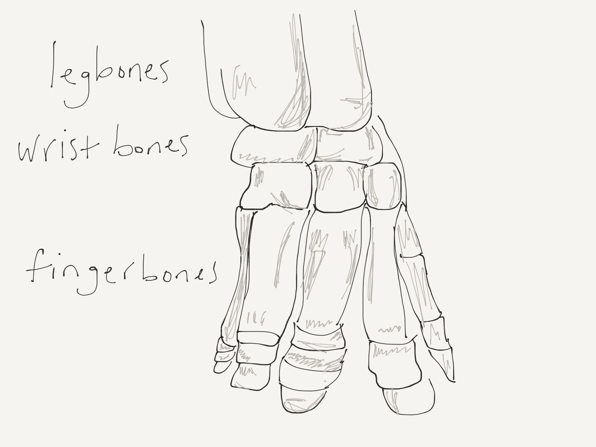
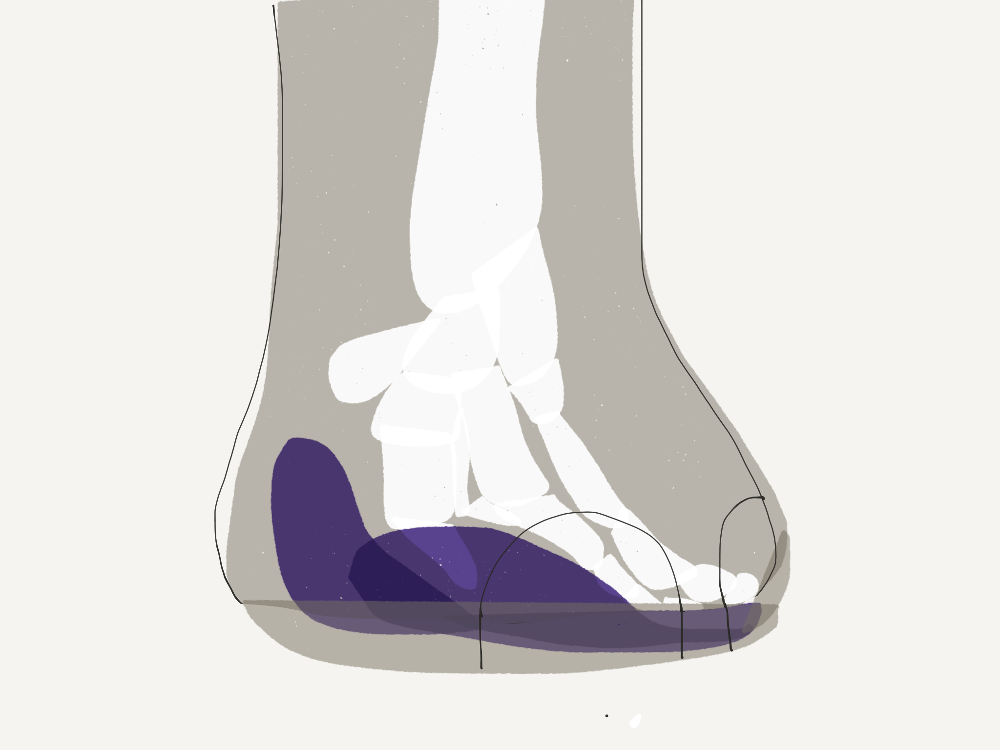

Elephant Feet!
Wow Eliza!
Today I set out to answer the question “How do elephants seismically communicate?” really meaning, how do they receive and interpret low frequency signals in the ground? This took me down several rabbit holes which led me to even more questions such as:
So, I started by learning that elephants interpret different low-frequency calls. They can discriminate between random low frequency sounds that scientists play them and the calls that elephants make. They can even distinguish between their own family’s calls and that of foreign calls. All of this was figured out in experiments by Caitlin O'Connell-Rodwell in Namibia where elephants were played different low frequency calls. Some were recordings of their own family members and others were recordings of elephants all the way in Kenya. The elephants responded only to their own family’s low-frequency alarm call. They did this by freezing, bunching up together and leave their area. Here’s a video of their response to such alarm calls!
When they freeze to “listen” to low frequency calls, it’s thought that elephants stand with their body oriented perpendicularly to the source of the sound. It’s suspected that they do this so that their ears are receiving the sound at different times so they can localize the direction from which the sound is coming. They also supposedly put most of their weight on their front feet (which they often do anyway — most ungulates do this, I learned) and sometimes they lift one foot. It’s suspected they do this to create a triangle which also may help them to interpret where the sound is coming from. This is something I really don’t understand — how does having three points help you interpret where something is come from??
Anyway, all this reading about elephants’ feet led to me to want to understand, what are elephants’ feet anyway. Like when I look at my feet and hands I see different bones, joints, different digits (aka fingers and toes). But what’s up with an elephant’s foot?! It’s like one huge blob-cylinder. Where are the toes? What’s going on there?
Well, the bones of elephants feet are actually inside of a lot of tissue — thick skin and fat. All of their fingers and toes are basically standing on their tips inside of their skin, around/on a huge platform of fat. They even have these kind-of extra toes that develop and harden throughout their lives that further support them. It’s crazy to think that inside of their feet, elephants have toes and their toes are standing on their tips!
The fat pad-platform in thei feet is thought to be important for a lot of things. Since elephants are so huge it may kind of be like a thick sole of sneaker, helping to support elephant’s weight and take some pressure off bones. It may help receive and amplify low frequency sound waves coming from other elephants through the soil. When elephants stand on them, they may also may help to squeeze veins to help pump blood back up elephants’ long legs.
Elephant’s front feet are bigger than their back feet and what we perceive as elephants’ toenails are, I think, different from our toenails because they don’t exactly correspond to how many different sets of toe bones they have inside of their feet. Asian elephants have four toenails on their front feet and three on the back feet. African elephants have five toenails in the front and four the back. Why!? I have no idea. A question for another day.
Back to the fat pads. It’s thought that the fat pads in elephant’s elephant’s feet help to transfer low frequency sound to their bones. Then the sound waves may go right up their bones into their ears and then into their brains. Kind of like how dolphins receive ultrasound through their fat-filled jaw-bones which then goes up their jaw bones and into their ear bones and then into their brain. Some possible evidence for this: elephant’s leg’s are positions right under their ears, elephants ears have this special sphincter (aka butt-hole-like) muscle that can close their ear canals off to seal them from the air. This would make them better at paying attention exclusively to low frequency sound coming from the ground. They also have really big ear bones inside their ears and their inner ears (their cochleas) seem to be sensitive to very low frequency sounds.
However, If low frequency sounds aren’t travelling through their bones to their ears, it’s possible that the sound waves are “just” affecting pressure sensors in the elephants feet the way we can feel vibrations in our hands. These pressure sensors change shape when vibrations hit them. When they change shape, they turn on nerves and send signals to their brain. Under a microscope, (I was looking at pictures of elephant feet under a microscope) and found that these pressure sensors look like onions (they look like this in us too!), which I thought is cool!
Ok, I love you. Have a great day!
Love,
Molly
P.S. Here are my resources:
Here's the next letter! XO